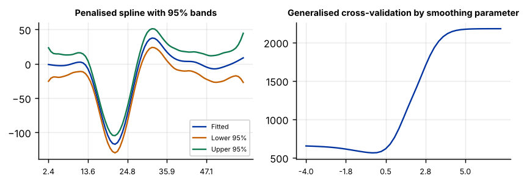

Run this model on your own data in Open Econometric Systems →
Step 1The question and the model
What smooth curve describes y as a function of x? The fit minimises
where \(B\) is a B-spline basis and \(D\) takes second differences of neighbouring coefficients. A large \(\lambda\) gives a straight line and \(\lambda \to 0\) interpolates the noise. The effective degrees of freedom, the trace of the smoother matrix, say how many parameters the curve is worth. We pick \(\lambda\) by generalised cross-validation and compare the straight line with the smooth curve with an approximate F test.
How to write it: the model
We fit head acceleration against time after impact with a penalised cubic B-spline (Eilers and Marx 1996), with 20 knots and a second-order difference penalty. The smoothing parameter is chosen by generalised cross-validation, and we report the effective degrees of freedom. We test the straight line against the smooth curve with an approximate F test, compare the fit with polynomials, and check the dependence on the number of knots and on the penalty in a simulation with a known function.
Step 2Load the data
import numpy as np
import pandas as pd
import oes_engine as oes # pip install -e open-econometric-systems/oes-engine
d = pd.read_csv("mcycle.csv")
print(len(d), "observations; time from", d.times.min(), "to", d.times.max(), "ms")
print("acceleration: mean", round(d.accel.mean(), 1), ", min", d.accel.min(), ", max", d.accel.max())
def s(res, label):
return next(x["value"] for x in res["summary"] if x["label"] == label)133 observations; time from 2.4 to 57.6 ms acceleration: mean -25.5 , min -134.0 , max 75.0
How to read it
There are 133 observations of head acceleration for times from 2.4 to 57.6 milliseconds after impact. Acceleration averages -25.5 and ranges from -134 to 75: it is flat before the impact is felt, falls sharply, rebounds and decays.
Step 3Fit the spline
spec = dict(y="accel", x="times")
r = oes.run("pspline", d.to_csv(index=False), spec)
oes.summary(r)
oes.show(r, "Penalised spline fit")
oes.show(r, "Test of nonlinearity")Observations: 133
Effective df: 11.64
Lambda: 0.5623
R-squared: 0.798
Nonlinearity test p-value: 0.0
Penalised spline fit (P-spline, Eilers and Marx 1996)
Value
Quantity
Smoothing parameter lambda 0.5623
Chosen by generalised cross-validation
Effective degrees of freedom (total) 11.6444
Effective degrees of freedom of the smooth 10.6444
Residual standard deviation 22.6685
R-squared 0.7977
GCV score 563.1679
Note: Cubic B-splines with 20 equally spaced knots and a second-order difference penalty. Effective degrees of freedom of 2 would be a straight line.
Test of nonlinearity
Statistic p-value Detail
Test
Linear against smooth (approximate F test) 44.1463 0.0 F with 9.6 and 121.4 degrees of freedom; H0: the effect of times is linearHow to read it
Generalised cross-validation chooses lambda = 0.56, which gives 11.6 effective degrees of freedom (10.6 for the smooth part); a straight line would have 2. R-squared is 0.80 and the residual standard deviation is 22.7. The approximate F test of a straight line against the smooth curve is 44.1 on 9.6 and 121.4 degrees of freedom, with p below 0.0001: the relation is clearly not linear.
Step 4The curve and the comparison with polynomials
oes.show(r, "Comparison with polynomials")
oes.show(r, "Estimated smooth function")
oes.plot(r)Comparison with polynomials
Parameters (effective) CV error (MSE) In-sample MSE
Model
Polynomial of degree 1 2.0000 2162.3742 2113.8634
Polynomial of degree 2 3.0000 2057.1527 1984.3854
Polynomial of degree 3 4.0000 1633.1640 1552.0609
Polynomial of degree 4 5.0000 1666.2664 1551.7196
Penalised spline (20 knots, lambda = 0.562) 11.6444 540.7085 468.8720
Note: Polynomial CV errors are shown for models without extra covariates.
Estimated smooth function
Fitted Lower 95% Upper 95%
times
2.4000 -1.1277 -25.5019 23.2464
7.9899 -1.6471 -16.1365 12.8423
13.5797 -7.3370 -19.0328 4.3588
19.1696 -103.9627 -114.9477 -92.9777
24.7595 -73.7193 -84.6217 -62.8170
30.3494 31.5034 17.7205 45.2863
35.9392 17.1876 4.5794 29.7957
41.5291 3.4234 -10.5084 17.3552
47.1190 -4.7361 -22.4543 12.9820
52.7089 -3.3481 -23.3472 16.6510
Note: Bayesian credible bands (Wahba 1983).
How to read it
The cross-validated squared error is 540.7 for the spline, against 1,633 for the best polynomial (degree 3) and 2,162 for a straight line, a reduction of about two thirds. The curve is flat at about -1 to -7 until 14 ms, drops to -104 at 19 ms, climbs through -74 at 25 ms to +31.5 at 30 ms, and decays to about zero (-4.7 at 47 ms). The credible bands are about ±24 at 2.4 ms, where the process is quiet, and ±11 at 19 ms, where it is violent: the method assumes constant noise, and in these data the noise is clearly larger in the middle, so the bands are too wide at the ends and too narrow in the middle.
Step 5Robustness: knots and the smoothing parameter
print("setting edf R-squared")
for k in (8, 12, 20, 40):
e = oes.run("pspline", d.to_csv(index=False), dict(spec, knots=k))
print(f"{k:3d} knots, GCV lambda {s(e, 'Effective df'):6.2f} {s(e, 'R-squared'):8.3f}")
for lam in (0.001, 0.05, 0.5623, 5, 500, 100000):
e = oes.run("pspline", d.to_csv(index=False), dict(spec, **{"lambda": lam}))
print(f"lambda {lam:10g} {s(e, 'Effective df'):6.2f} {s(e, 'R-squared'):8.3f}")setting edf R-squared 8 knots, GCV lambda 9.75 0.784 12 knots, GCV lambda 10.41 0.793 20 knots, GCV lambda 11.64 0.798 40 knots, GCV lambda 12.27 0.799 lambda 0.001 21.74 0.806 lambda 0.05 16.83 0.804 lambda 0.5623 11.64 0.798 lambda 5 7.82 0.747 lambda 500 3.29 0.315 lambda 100000 2.02 0.091
How to read it
The number of knots matters little once the penalty is chosen from the data: with 8, 12, 20 and 40 knots the effective degrees of freedom are 9.8, 10.4, 11.6 and 12.3 and R-squared is between 0.784 and 0.799. The penalty matters a lot when it is fixed: lambda = 0.001 gives 21.7 degrees of freedom and follows the noise, lambda = 5 gives 7.8 and R-squared falls to 0.747, lambda = 500 gives 3.3 and 0.315, and lambda = 100,000 gives 2.02 degrees of freedom, a straight line with R-squared 0.09.
Step 6Diagnostics: a simulation with a known function
rng = np.random.default_rng(2)
print(" n edf mean |error| spline mean |error| cubic polynomial")
for n in (100, 300, 1000):
a = []; p = []; ed = []
for _ in range(10):
x = np.sort(rng.uniform(0, 6, n)); y = np.sin(2 * x) + rng.normal(0, 0.4, n)
e = oes.run("pspline", pd.DataFrame(dict(x=x, y=y)).to_csv(index=False), dict(y="y", x="x"))
g = np.array(e["tables"][3]["rows"], float)
a.append(np.mean(np.abs(g[:, 1] - np.sin(2 * g[:, 0])))); ed.append(s(e, "Effective df"))
c = np.polyfit(x, y, 3); p.append(np.mean(np.abs(np.polyval(c, g[:, 0]) - np.sin(2 * g[:, 0]))))
print(f"{n:5d} {np.mean(ed):6.1f} {np.mean(a):17.3f} {np.mean(p):24.3f}")n edf mean |error| spline mean |error| cubic polynomial 100 11.0 0.102 0.581 300 10.7 0.064 0.586 1000 12.8 0.042 0.592
How to read it
With the true function sin(2x) and noise 0.4, the spline uses 11 to 13 effective degrees of freedom and its mean absolute error falls from 0.102 with 100 observations to 0.064 with 300 and 0.042 with 1,000. A cubic polynomial stays at 0.58 to 0.59, because the function is too wavy for it and more data does not remove its bias.
Step 7Write the results
How to write it: results
We fit head acceleration against time after impact in 133 simulated crashes with a penalised cubic B-spline (20 knots, second-difference penalty). Generalised cross-validation selects a smoothing parameter of 0.56 and 11.6 effective degrees of freedom. The fitted curve is flat until about 14 ms, falls to -104 at 19 ms, rebounds to +31 at 30 ms and settles near zero after 45 ms. A straight line is rejected (F = 44.1, p < 0.0001), and the cross-validated error is 541, against 1,633 for the best polynomial. The fit is stable to the number of knots (8 to 40), but the bands assume constant variance and are too wide where the data are quiet and too narrow where they are noisy. In simulations the spline recovers a known function with an error that falls with the sample, while a cubic polynomial does not.
References. Eilers and Marx (1996), Statistical Science; Wood (2017), Generalized Additive Models: An Introduction with R; Silverman (1985), Journal of the Royal Statistical Society B; Ruppert, Wand and Carroll (2003), Semiparametric Regression.